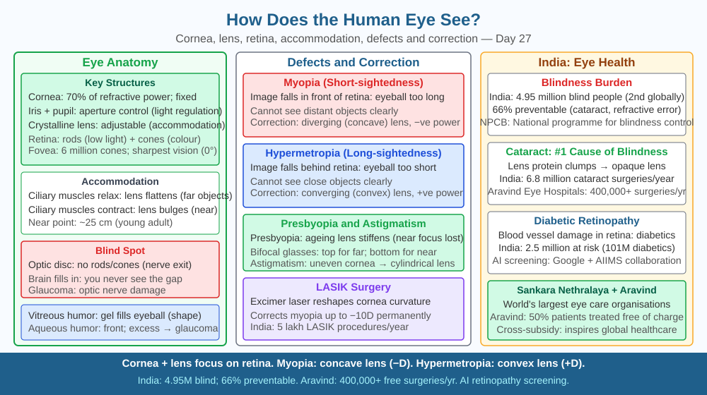

By the end of this lesson, you should be able to explain accommodation by naming the ciliary muscles and their action, describe how myopia and hypermetropia arise from lens or eyeball shape, state the corrective lens type for each defect, and predict what happens to focus when the lens becomes too stiff to change shape.
You look up from a book and immediately see a distant bird clearly, without any conscious effort. A fraction of a second later you look back at the text and the letters are sharp again. No button was pressed, no dial was turned. How does your eye shift focus instantly between centimetres and kilometres — and why do millions of Indians need spectacles to do what used to happen automatically?
The human eye is an optical instrument built around a biconvex lens that focuses light onto a light-sensitive surface. But unlike a camera, where the sensor moves to adjust focus, the eye achieves focus by changing the curvature of its lens — a process called accommodation.
The optical path through the eye
Light enters the eye through the cornea — a transparent, fixed dome that provides about two-thirds of the eye's total refracting power (approximately 43 dioptres out of ~60 total). The cornea is fixed and cannot change shape. Light then passes through the aqueous humour, through the pupil (the opening in the coloured iris), and reaches the crystalline lens behind the pupil. The lens provides the remaining one-third of refracting power and, crucially, is the adjustable component. After the lens, light travels through the vitreous humour (a clear gel filling the eyeball) and strikes the retina at the back.
The retina is a layer of photoreceptor cells: - Rods (~120 million): sensitive to low light intensity, not colour; used for peripheral and night vision. - Cones (~6 million): concentrated in the central fovea, sensitive to colour (three types: red, green, blue). Cones require bright light and give fine detail and colour vision.
Signals from rods and cones travel along the optic nerve to the visual cortex in the brain, which interprets them as an upright, coloured image (the image on the retina is inverted, just as in a camera).
Accommodation — how the lens changes focus
The crystalline lens is held in place by suspensory ligaments (zonule fibres) attached to a ring of muscle called the ciliary muscle. When the ciliary muscle is relaxed, it pulls the suspensory ligaments taut, which stretches the lens and makes it thinner and flatter — lower curvature, longer focal length, suited for viewing distant objects. When the ciliary muscle contracts, it moves inward, slackening the suspensory ligaments. Without the outward pull, the lens's own elasticity causes it to bulge, becoming thicker and more curved — shorter focal length, suited for viewing close objects. This change in lens shape to adjust focal length is accommodation.
The near point of a healthy young eye is about 25 cm — the closest distance at which the lens can accommodate enough to focus. The far point is infinity — a relaxed eye focuses parallel rays from distant objects sharply on the retina.
Defects of vision and their correction
Myopia (short-sightedness): The eyeball is slightly too long, or the cornea/lens is too curved. Parallel rays from a distant object converge to a focus in front of the retina rather than on it. The far point is closer than infinity — a myopic person cannot see clearly beyond a certain distance. Correction: a concave (diverging) lens spreads the rays slightly before they enter the eye, so they converge on the retina. India has one of the highest rates of childhood myopia in the world, partly linked to reduced outdoor time.
Hypermetropia (long-sightedness): The eyeball is slightly too short, or the lens is too flat. Rays from a close object would converge behind the retina. The near point is farther than 25 cm — the person can see distant objects clearly but cannot focus on close ones without strain. Correction: a convex (converging) lens adds extra convergence before the eye, reducing the required accommodation.
Astigmatism: The cornea is not perfectly spherical but slightly oval, like a rugby ball. Rays in one plane (e.g., vertical) focus at a different distance from rays in the perpendicular plane (horizontal). This produces blurred or distorted vision at all distances. Correction: a cylindrical lens that refracts in only one plane, compensating for the unequal curvature.
Presbyopia (age-related stiffening): After about age 40, the crystalline lens loses elasticity and hardens. The ciliary muscle can still contract, but the stiff lens no longer changes shape in response. The near point recedes — close objects become blurred. This is why many people in their 40s hold their phones at arm's length. Correction: reading glasses (convex lenses) or bifocals.
The eye as an optical system:
Defect = focal length mismatch with eyeball length → corrective lens restores match: - Too long eyeball / too curved lens → myopia → concave lens correction - Too short eyeball / too flat lens → hypermetropia → convex lens correction - Stiff lens / cannot change curvature → presbyopia → reading glasses
The included SVG shows a horizontal cross-section of the eye. Labels point to: cornea, iris, pupil, crystalline lens, ciliary muscle, suspensory ligaments, vitreous humour, retina, fovea, and optic nerve. Two inset diagrams show the lens in relaxed state (flat, viewing distance) and contracted state (bulging, viewing near). A third inset compares normal eye, myopic eye (focus in front of retina, corrected by concave lens), and hypermetropic eye (focus behind retina, corrected by convex lens).

A 45-year-old teacher finds that she can read a whiteboard clearly at 5 m but cannot read a textbook held closer than 50 cm without discomfort. A student in the same class can read text at 15 cm comfortably.
Using the terms ciliary muscle, suspensory ligaments, lens curvature, and near point: explain why the teacher has difficulty reading close text but not the distant board. What type of defect is this, and what type of corrective lens would help? Why would LASIK surgery on her cornea not solve this problem?
How does the human eye form a clear image on the retina?
Correct answer: c
Why is understanding accommodation and refraction more useful than just knowing eyes see?
Correct answer: b
What would happen to vision if the eye's lens became too stiff to change shape?
Correct answer: c
Explain today's concept to a younger student in 60 seconds without technical jargon. Then explain it again using the correct scientific vocabulary.
If both explanations describe the same mechanism, you have understood the concept rather than memorised it.
The human eye can detect a single photon under ideal dark-adapted conditions — a sensitivity that exceeds most commercial light sensors. Yet in bright sunlight, pupils contract to about 2 mm diameter to protect the retina from saturation. The pupil adjustment (mediated by the iris muscles) changes the light entering the eye by a factor of up to 16×, but the retina's sensitivity adjusts by a further factor of 100,000× through chemical changes in the rod pigment (rhodopsin). This is why, after walking from bright sunlight into a dark cinema, you are effectively blind for a minute — your rhodopsin was bleached by the sunlight and needs time to regenerate.
The human eye focuses by changing the curvature of its lens through ciliary muscle contraction (accommodation); when the lens becomes too stiff to change shape — as in presbyopia — the eye can no longer adjust focal length and close objects appear blurred, which is why understanding this mechanism directly explains short-sightedness, long-sightedness, and the need for corrective lenses.